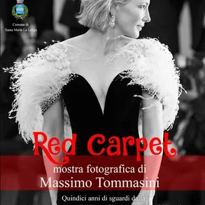

da sab 28 nov a dom 31 gen
RED CARPET – Mostra fotografica di Massimo Tommasini
Apertura da sabato 28 novembre fino a domenica 31 gennaio 2027 La Villa ottocentesca Mauroner, a Tissano, in provincia di Udine, ospiterà Red Carpet, la mostra fotografica del fotoreporter Massimo Tommasini, dedicata a quindici anni vissuti e raccontati attraverso le immagini…
 Indicazioni
Indicazioni
- Costi e prenotazioni
- Costo non indicato · Prenotazione non indicata
- Programma
- Programma da verificare. Apri la fonte ufficiale per orari e possibili aggiornamenti.
- In caso di maltempo
- Nessuna indicazione specifica pubblicata.
- Note
- Acquisito automaticamente dalla fonte.
L’EVENTO
Descrizione completa
Apertura da sabato 28 novembre fino a domenica 31 gennaio 2027 La Villa ottocentesca Mauroner , a Tissano, in provincia di Udine, ospiterà Red Carpet , la mostra fotografica del fotoreporter Massimo Tommasini , dedicata a quindici anni vissuti e raccontati attraverso le immagini della Mostra Internazionale d’Arte Cinematografica di Venezia . Red Carpet è un racconto per immagini in cui il tappeto rosso diventa un palcoscenico e la fotografia prova a fermare ciò che, normalmente, scompare in un istante: un gesto, un’espressione, un’emozione. Il tempo di un flash. Dalle sfilate di Lady Gaga ed Emma Stone a quelle di Timothée Chalamet e Brad Pitt , passando per Mick Jagger ed Ennio Morricone , fino ai momenti legati alla presentazione di film come Joker , La La Land e Povere creature! . Ma Red Carpet non vuole essere soltanto una galleria di personaggi famosi. È un racconto per immagini di ciò che accade attorno al grande spettacolo del cinema: l’attesa, i flash, le urla del pubblico, gli incontri, le lacrime, i sorrisi e quei piccoli istanti che durano spesso soltanto il tempo di uno scatto. Orari di apertura: Sabato 10:30–13:00 Domenica 10:30–13:00 / 16:00–19:00 OLTRE ALLA MOSTRA Nel periodo della Mostra Red Carpet altri appuntamenti arricchiranno l’offerta culturale, Le emozioni continueranno con il concerto «Off The Beaten Track» , solo guitar di Enrico Maria Milanesi , chitarrista e arrangiatore del celebre quartetto 40 Fingers, con cui si è esibito per sette anni in tournée nei maggiori teatri di tutto il mondo e una serata di Aperitivo con l’Arte dedicata alla fotografa Letizia Battaglia , con Michela Cembran alla voce, Amir Karalic alla chitarra e la regia di Massimo Tommasini. Questo il programma degli eventi: Sabato 28 novembre ore 18:00 vernissage “Red Carpet” Domenica 6 dicembre ore 17:30 Aperitivo con l’Arte: Spettacolo: A distanza di un cazzotto – Letizia Battaglia Sabato 19 dicembre ore 20:30 concerto: Enrico Maria Milanesi – Off the beaten track “Un viaggio per chitarra sola tra grandi classici riarmonizzati, pagine di cinema e composizioni originali.”
IL PROGRAMMA
Programma e orari
Appuntamenti raccolti dalle fonti elencate. Dove manca un orario, non è ancora disponibile in questa scheda.
Programma pubblicato
- ore 18:00
- ore 17:30 Aperitivo con l’Arte:
- ore 20:30 concerto:
INFORMAZIONI UTILI
Prima di partire
- Controllare la fonte prima di partire.
ORGANIZZAZIONE